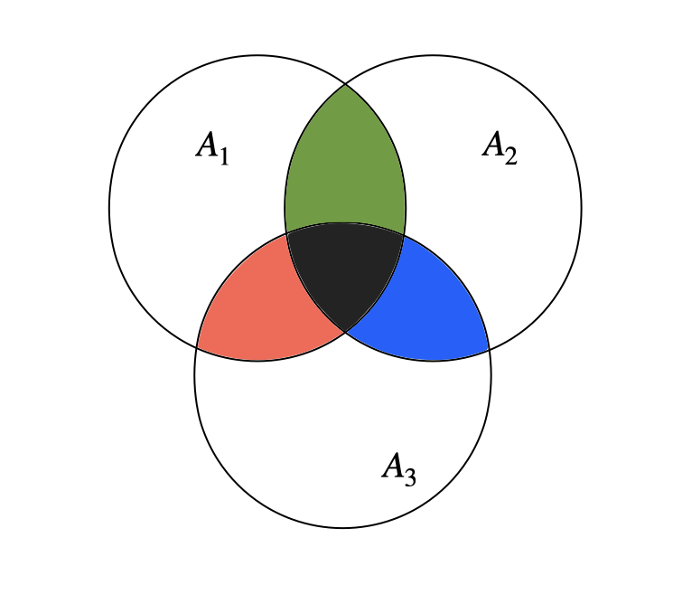

大前提として、ここでいう集合とは重複する要素を持たず、\(2\) つの集合の和集合 \(A \cup B\) は ( \(A\) または \(B\) ) に登場する要素を重複せずに持つ集合です。
\(N\) 個の集合 \(A_1,A_2,\dots,A_N\) に対して、これらの和集合の要素数 \(\left| A_1 \cup A_2 \dots \cup A_N \right|\) を \(\sum_{I \subset \{1,2,\dots,N\}} \left|\bigcap_{i\in I}A_i \right| \times (-1)^{\left| I \right|+1} \) と書くことができます。これを包除原理と言います。
例えば \(N=3\) の場合、\(\left|A_1 \cup A_2 \cup A_3 \right| = \left| A_1 \right| + \left| A_2 \right| + \left| A_3 \right|\) \( - \left| A_1 \cap A_2\right| - \left| A_1 \cap A_3 \right| - \left| A_2 \cap A_3\right| + \left| A_1 \cap A_2 \cap A_3\right|\) となります。例からも分かる通り、積集合の要素数ごとにひとまとまりの項と捉えた時、奇数個の集合の積の項は加算、偶数個の集合の積の項は減算となっています。

和集合のサイズを計算するとき、それぞれの集合で共通する要素をちょうど \(1\) 回ずつ数える必要があります。包除原理を使うと、重複する要素の分を足し引きしてうまく調節することができます。
これを、集合を受け取るモジュラ関数 \(f\) に拡張して考えます。関数 \(f\) が以下を満たすとき、\(f\) をモジュラ関数といいます。
このとき、\(f(A_1 \cup A_2 \dots \cup A_N) = \sum_{I \subset \{1,2,\dots,N\}} f(\bigcap_{i\in I}A_i )\times (-1)^{\left| I \right|+1} \) です。具体的には、以下の手続きで \(f(A_1 \cup A_2 \cup \dots \cup A_N)\) を得ることができます。
\(\vdots\)
\(f(A_1 \cup A_2 \dots \cup A_N)\) の計算のために、\(\{A_1 \cup A_2 \dots \cup A_N\}\) の部分集合 \(X\) に対する \(f(X)\) の結果を用いていることから、包除原理による \(f\) の計算は DP のひとつと言えます。
また、和 (\(+\)) 以外の群の演算 (\(\times , \oplus\) など) についても同様のアルゴリズムを適用できる場合がありますが、自分が出会ったのは今のところ全て和の場合のみでした。アルゴリズムが適用可能かどうかが \(f\) に依存することに注意してください。
似たような話で、整数 \(x\) の約数の集合に対して値を返す関数 \(f\) を用いたアルゴリズムが存在します。
メビウスの反転公式
ある整数ちょうどを対象に数え上げることは難しく、ある整数の約数全てに対して数え上げることは簡単な場合がしばしばあります。例えば以下の問題はメビウスの反転公式を用いた約数包除の式変形によって簡単に回答できます。
問題文以下の関数をオイラーのトーシェント関数と言います。
証明はしませんが、\(n\) の約数全てに対して \(\varphi\) 関数を足し合わせたら \(n\) になります。